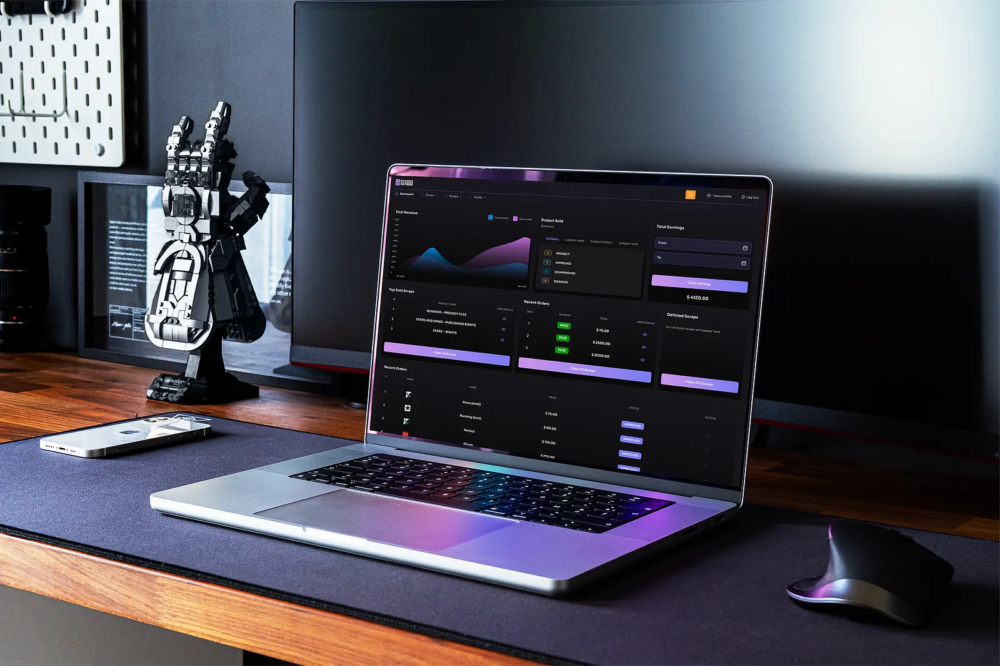

LogTraq | Finance Operations Software
Collect client evidence, track readiness, route professional review, and keep every deadline defensible without replacing your accounting, payroll, or filing software.

Seamless Administration
LogTraq sits between your practice, your clients, and compliance systems. Here is how it works:
Set recurring tax, VAT, payroll, or CIPC tasks with custom checklists and required document slots for each client.
Clients receive secure, passwordless links to upload documents directly from their phones or desktop computers.
Audit readiness at a glance. Flag exceptions, route files for practitioner sign-off, and record final submission proof.
Stop digging through emails and chat threads. The Today workspace answers what needs attention immediately:
Clients don't need another username and password. LogTraq provides secure, branded, passwordless portals optimized for mobile:
Targeted Operations
Modular operational packs configured to match South African compliance timelines.
IRP5/IT3, medical aid, retirement annuities, travel logs, client approvals, and verification tracking.
Year-end IRP6 schedules, practitioner estimates, client declarations, and company tax readiness.
Month-end document packs, bank coverage audits, invoices, journal entries, and period lock gates.
Remuneration changes, starters/leavers evidence, variance analysis, and EMP201/EMP501 readiness.
CIPC annual returns, beneficial ownership declarations, director changes, and share registers.
Verification letter processing, deadline monitors, indexed response bundles, and audit outcomes.
Prepared-by-client (PBC) checklists, secure auditor portal access, query threads, and representation locks.
Works Alongside Your Stack
LogTraq operates as the administrative intake layer. We do not replace your production systems.
Compliance First
Protecting client information and respecting statutory frameworks is built into our core.
Granular Row Level Security (RLS) restricts access by tenant. Private storage folders require short-lived, signed download tokens. Built-in malware scanning on upload.
Practitioners do not store or share SARS eFiling or CIPC login credentials inside LogTraq. Hand-ins and filings occur directly via the professional's browser session.
LogTraq does not write tax opinions, calculate returns, sign off audits, or submit filings autonomously. Your registered, accountable professional review holds every sign-off.
Every download, upload, status change, and client approval registers an immutable audit trace. Support staff hold zero document access rights by default.
Pricing Model
Get set up quickly with zero hidden administrative costs.
Ideal for small tax practices, bookkeepers, and payroll offices launching client document portals.
Request a 90-second demonstration of the client document portal.
Request a practice walkthrough